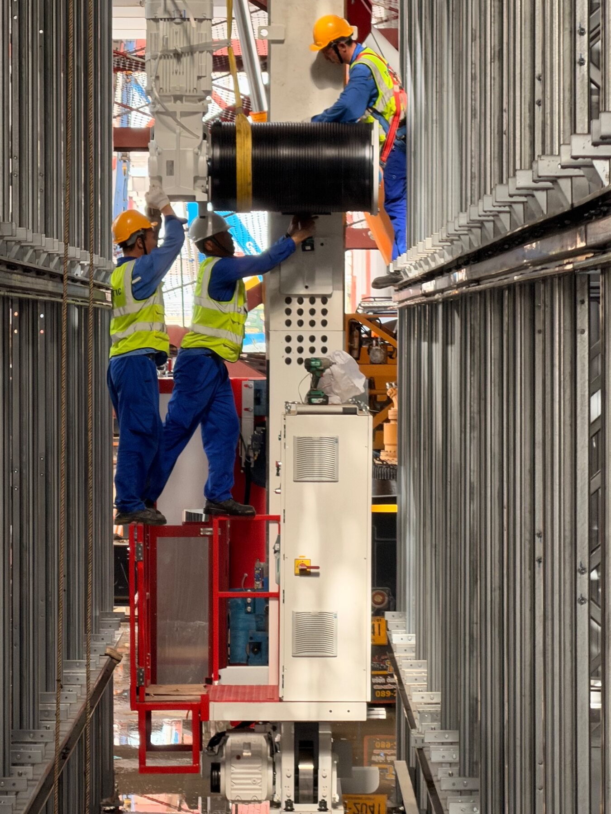
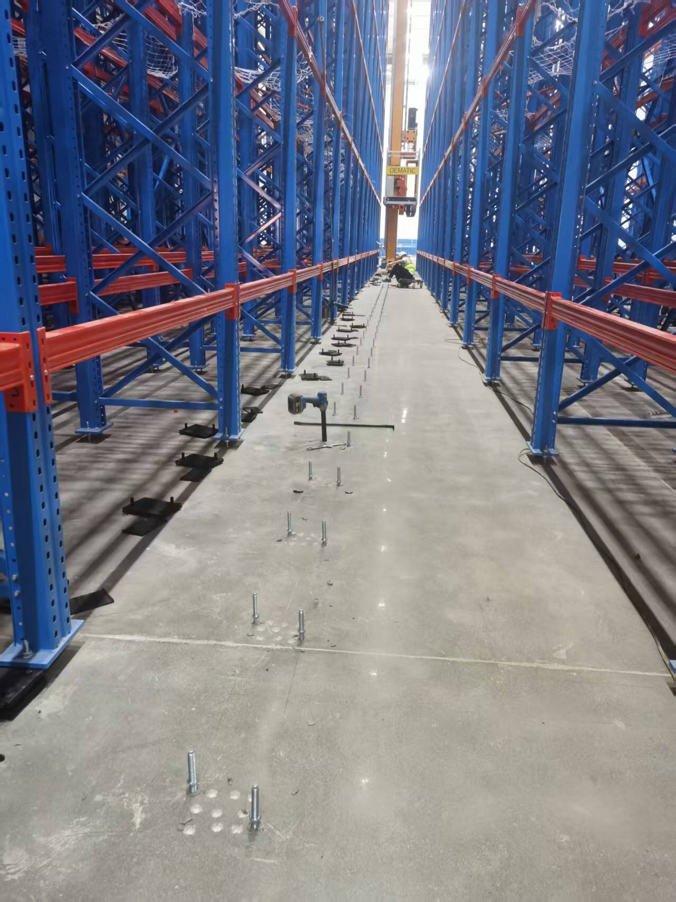

PROJECT MANAGEMENT · ANONYMIZED WORK EVIDENCE
不只追進度，
而是讓交付條件
真的能被完成。工程／設備專案管理｜時程・風險・跨部門協調・交付追蹤
我以工程與設備專案為工作場景，將需求、規格、供應條件、現場介面與驗收節點整理成可追蹤的行動。面對變動時，不只回報問題，而是同步釐清影響、責任窗口、決策期限與下一步。
專案時程規劃Issue / Risk Log跨部門協調規格與品質確認供應與交付追蹤
01 · PROJECT CONTROL METHOD
從需求進場到交付，
每一步都有判斷依據。
專案管理的價值不只在排甘特圖，而在於讓不同部門用相同的資訊做決定。以下為既有工程／設備專案工作方式的匿名化重建。
確認需求基準
彙整圖面、規格、數量、時程、現場條件與交付目標，辨識尚未決定的事項。
拆解工作與介面
將設計、採購、製作、施工、測試與文件責任，轉為可確認的工作項目。
建立節點與追蹤
以里程碑、Issue Log、會議結論與責任窗口追蹤進度，不讓問題只停在口頭。
處理變動與風險
遇到版本、供應或現場異常時，先判斷影響，再提出處理選項與確認期限。
驗收與交付檢核
對照範圍、完成度、驗收紀錄與必要附件，確認可進入下一個交付或付款節點。
02 · CASE STUDY
複雜專案不是靠催件，
而是先把界面說清楚。
案例以自動化設備、鋼構與工程材料的交付管理為背景，所有名稱、數字與可辨識資訊均已去識別化。

CASE · EQUIPMENT DELIVERY INTEGRATION
工程、供應商與現場，如何在同一個交付節點對齊？
當圖面、製作、進場與安裝條件彼此依賴時，我會將未決事項、風險、責任窗口及需要的確認資料，納入追蹤節奏；協助讓供應商回覆能真正轉換成內部可執行的安排。
03 · SCHEDULE & MILESTONE
時程不是一條線，
是可驗證的承諾。
以下示意我如何以里程碑串聯設計確認、供應、現場作業、測試與驗收；需提前處理的關鍵點會獨立列入風險與會議追蹤。
W1W2W3W4W5W6W7W8需求／規格基準確認確認基準跨部門工作拆解責任對齊供應／製作／現場進度追蹤與異常處理測試、驗收與文件交付檢核
04 · ISSUE & COMMUNICATION
讓會議不是回顧，
而是推進決策。
我習慣將會議與跨部門溝通收斂為可追蹤的行動紀錄：問題是什麼、影響什麼、誰要確認、何時回覆，以及未處理時的替代方案。
RISK / ISSUE LOG · SAMPLE
關鍵材料交期與現場作業面不同步
採購／現場確認分批到貨、進場窗口與對後續工序的影響。
W4
圖面版本與報價排除項目待釐清
工程指定工程窗口，確認最新版次及必要製程。
W2
供應商產能與關鍵工序有重疊
供應商要求產能排程佐證，評估備援與調整方案。
W5
驗收附件需於交付前完成檢核
PM／品質以驗收條件與附件清單安排補件責任與期限。
W7
05 · PROJECT RECORDS
紀錄不是行政作業，
是讓決策能被接續的工具。
我會把分散在會議、圖面、現場與供應商回覆中的資訊，收斂成團隊可以共同使用的版本、行動與檢核資料。
06 · FIELD EVIDENCE
現場不是背景，
是專案判斷的依據。
這些去識別化照片不是裝飾，而是說明工作如何連結實際安裝條件、設備界面、材料到貨與系統交付。

走入現場確認動線、尺寸及作業條件，讓排程與供應安排回到實際限制。

將不同承攬範圍與交付責任拆開確認，減少工序間的責任空白。

交付不止到貨；需同步確認測試、文件、操作需求與後續責任。
產品進度與時程掌控
以里程碑、待辦、責任窗口與確認期限追蹤交付節點。
跨部門溝通與分工整合
協調工程、供應商、現場／施工單位與內部需求端，釐清界面與下一步。
規格、品質與變動確認
對照圖面版本、技術條件、實物與驗收要求，提前辨識落差與風險。
會議策劃、紀錄與跟催
將討論轉為可驗證的決策、行動項目、責任人與回覆期限。
本作品集為個人工作方法與去識別化案例重建。所有公司、客戶、供應商、數字、合約與技術細節均未揭露；不代表曾直接管理汽車、醫療、精密零件或新產品導入專案。